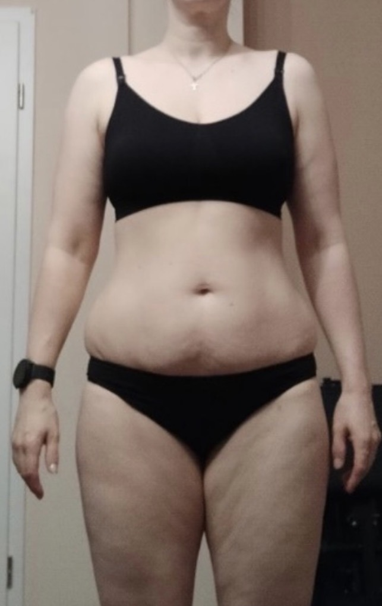
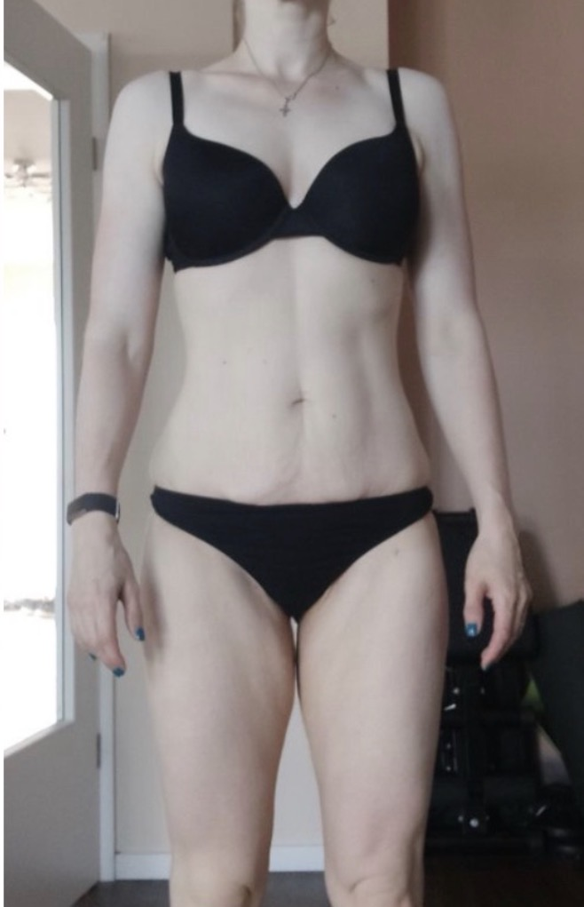
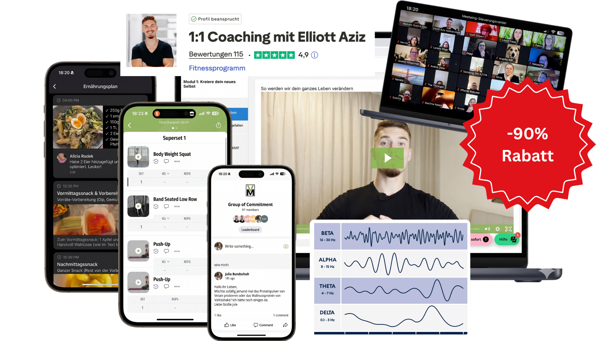

Eine ehrliche Auswertung dessen, was deine Antworten über deinen Körper, dein Nervensystem und dein Essverhalten zeigen — und was dein nächster sinnvoller Schritt ist.
und macht dir das Abnehmen extrem schwer.
Empfohlen auf Basis deiner Analyse
Teil 1 Dein Profil
Reflexion · optional ausfüllen
Nimm dir 2 Minuten. Antworte ehrlich — nur für dich.
In welchen Situationen erkennst du dich am stärksten wieder?
Wann war dein letzter Abend genau so?
Wie viel Energie kostet dich das gerade auf einer Skala von 1–10?
Teil 2 Der Mechanismus
Wenn dein System zu oft auf Alarm steht, passiert Folgendes in deinem Körper und Kopf:
Grund 1
Dein Körper will Energie sparen
Er hält lieber fest, statt loszulassen — dadurch wird Fettabbau extrem schwer, egal wie wenig du isst.
Grund 2
Heißhunger wird automatisch ausgelöst
Es ist dann keine Willensfrage mehr, sondern die schnellste Beruhigung, die dein System kennt.
Grund 3
Dein Kopf sucht ständig nach Essen, um runterzufahren
Essen wird zum einzigen verlässlichen Ventil — der schnellste Weg, damit dein System überhaupt noch abschalten kann.
Ein typischer Tag in deinem Profil
Morgens
„Heute ziehe ich es durch." — guter Vorsatz, klarer Plan.
Tagsüber
Du funktionierst, sammelst Stress. Anspannung baut sich auf.
Abends
Kopf voll, müde. Snack, Kühlschrank — du kannst kaum widerstehen.
Danach
Schlechtes Gewissen. „Montag starte ich neu" — und der Kreislauf beginnt.
Solange dieser Stress- & Heißhunger-Kreislauf läuft, wird sich Abnehmen wie Kampf anfühlen — egal welchen Plan du versuchst.
Teil 3 Die ehrliche Prognose
Diese Analyse zeigt dir klar, wo du stehst. Aber sie ändert nichts, wenn du nichts änderst. So sieht der wahrscheinliche Verlauf aus:
In den nächsten Wochen
In den nächsten 6–12 Monaten
„Die Analyse zeigt dir, wo du stehst — aber sie ändert nichts, wenn du nichts änderst."
Teil 4 Was dir die Analyse empfiehlt
Um aus diesem Profil auszusteigen, brauchst du keinen härteren Plan, sondern zuerst einen gezielten Reset:
Nervensystem täglich runterfahren
Täglich 5 Minuten Atem-/Beruhigungsübungen, damit dein Körper aus dem Dauer-Stress rauskommt.
Ernährung entschärfen & Essen aus dem Kopf holen
Kleine, haltbare Anpassungen (z. B. Süßes halbieren, mehr Eiweiß, feste Mahlzeiten) — ohne strikte Diät und ohne Kalorienzählen. Mehr brauchst du nicht, weil du durch Schritt 1 deinen eingeschlafenen Stoffwechsel wieder in Gang bringst.
7 Tage konsequent durchziehen
Deine neuen Nervensystem- und Ernährungsroutinen 7 Tage am Stück — auch am Wochenende — leben, damit sie zu deinem neuen Standard werden.


Vorher
Mona hatte das gleiche Profil wie du: tagsüber diszipliniert, abends Heißhunger, ständiges Jo-Jo.
Wendepunkt
Sie hat zuerst diese 3 Schritte aus der Analyse umgesetzt — statt noch eine Diät zu starten.
Ergebnis
12 Wochen später: −10 kg, weniger Heißhunger, ruhiger im Kopf — und sie hält ihr Gewicht bis heute.
Mona ist über die 7-Tage Reset-Challenge gestartet — genau die, die wir dir empfehlen.
Du kannst versuchen, diese 3 Schritte alleine umzusetzen. — oder — Du nutzt die 7-Tage Reset-Challenge, die genau dafür gebaut wurde.
Jetzt 7-Tage Reset-Challenge starten
Alles, was du brauchst, um deinen 3-Schritt-Plan wirklich umzusetzen.
Was du heute bekommst
Dieses Angebot gilt nur für kurze Zeit und nur für Frauen, die die Abnehm-Analyse gemacht haben.
Wenn du wartest, ist dein Profil dasselbe — nur deine Frustration größer.